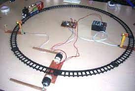

In this we can Control the railway Gates Automatically.when the train is at 2km distance to approach the gates we will give information to the pepole at the railway gates through displaying the msg like "the gates are closing" on the Lcd and voice message and the railway person will get message at what distance the train is coming. 
In this project we will establish the connection between different multiple master and multiple slave.it is the internal process it will show how internally it will work when we connect the objects to the system.